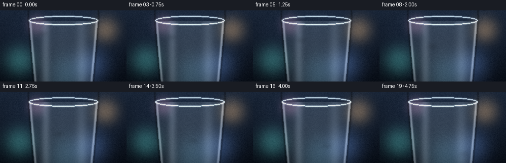
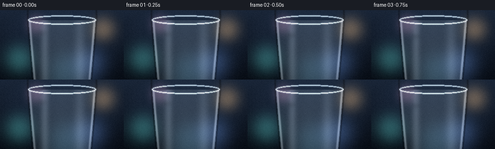

CODING AGENTS AS PIXEL WORLD MODELS
traex/Seed-2.1-Pro-0915 · phygen_037
点击播放 · 原生 RGB 像素
逐轮保存的候选
回放视频、检查图与代码变化。
每份候选均可单独播放。实际图片检查记录在下方工具轨迹中。
候选 01播放与检查图
点击播放 · 原生 RGB 像素


展开代码变化
--- 上一保存版本
+++ 本次保存版本
@@ -0,0 +1,316 @@
+"""Procedural text-to-video generator.
+
+Scene: a glistening dewdrop sliding across the smooth curved surface of a
+drinking glass. Everything is rendered from math + numpy/PIL: soft bokeh
+behind the glass, Fresnel rim light, a refracting lens drop that magnifies the
+glass reflections, a wet trail, and twinkling specular glints.
+"""
+import math
+from pathlib import Path
+
+import numpy as np
+from PIL import Image, ImageDraw, ImageFilter
+
+import artifact_io
+
+CASE_DIR = Path(__file__).resolve().parent
+W, H, N, FPS = 256, 144, 20, 4.0
+
+rng = np.random.default_rng(20261110)
+YY, XX = np.mgrid[0:H, 0:W].astype(np.float32)
+
+
+# ---------------------------------------------------------------------------
+# Static background: cool gradient with soft bokeh glows
+# ---------------------------------------------------------------------------
+def build_background():
+ top = np.array([34, 50, 74], dtype=np.float32)
+ bottom = np.array([10, 17, 28], dtype=np.float32)
+ t = (YY / (H - 1))[..., None]
+ bg = top[None, None] * (1 - t) + bottom[None, None] * t
+
+ glow = np.zeros((H, W, 3), dtype=np.float32)
+ bokeh = [
+ (38, 102, 26, 150, (70, 170, 165)),
+ (214, 38, 22, 130, (235, 178, 104)),
+ (186, 112, 30, 120, (96, 138, 220)),
+ (74, 28, 16, 110, (196, 128, 178)),
+ (132, 128, 34, 90, (80, 150, 190)),
+ ]
+ for cx, cy, r, strength, color in bokeh:
+ glow_layer = Image.new("L", (W, H), 0)
+ ImageDraw.Draw(glow_layer).ellipse(
+ (cx - r, cy - r, cx + r, cy + r), fill=strength
+ )
+ mask = np.asarray(
+ glow_layer.filter(ImageFilter.GaussianBlur(r * 0.55)),
+ dtype=np.float32,
+ ) / 255.0
+ glow += mask[..., None] * np.array(color, dtype=np.float32)
+
+ # Screen blend of the glows onto the gradient.
+ bg = 255.0 - (255.0 - bg) * np.clip(1.0 - glow / 255.0, 0.0, 1.0)
+ return np.clip(bg, 0, 255)
+
+
+# ---------------------------------------------------------------------------
+# Glass body: tumbler silhouette with reflection bands and rim
+# ---------------------------------------------------------------------------
+RIM_Y, BOTTOM_Y = 20.0, 150.0
+
+
+def half_width(y):
+ u = np.clip((y - RIM_Y) / (BOTTOM_Y - RIM_Y), 0.0, 1.0)
+ return 70.0 - 11.0 * np.power(u, 1.1)
+
+
+def build_glass(base):
+ hw = half_width(YY)
+ body = (YY > RIM_Y) & (np.abs(XX - 128.0) < hw)
+ edge_dist = hw - np.abs(XX - 128.0)
+
+ out = base.copy()
+
+ # Faint cool glass fill.
+ glass_tint = np.array([205, 228, 238], dtype=np.float32)
+ out[body] = out[body] * 0.90 + glass_tint * 0.10
+
+ # Vertical soft reflection streaks (the features the drop will magnify).
+ bands = [
+ (92.0, 6.0, 0.16),
+ (165.0, 8.0, 0.12),
+ (128.0, 30.0, 0.05),
+ ]
+ streak = np.zeros((H, W), dtype=np.float32)
+ for cx, sigma, alpha in bands:
+ streak += alpha * np.exp(-0.5 * ((XX - cx) / sigma) ** 2)
+ streak *= body.astype(np.float32) * (0.75 + 0.25 * (YY / H))
+ out += streak[..., None] * np.array([235, 245, 250], dtype=np.float32)
+
+ # Bright edge highlight and a thin dark refraction line just outside.
+ bright_edge = np.exp(-0.5 * ((edge_dist - 3.0) / 1.6) ** 2) * body * 0.35
+ dark_edge = (
+ np.exp(-0.5 * ((edge_dist + 1.0) / 1.5) ** 2) * (~body) * 0.30
+ )
+ out += bright_edge[..., None] * 235.0
+ out *= 1.0 - dark_edge[..., None]
+
+ # Rim ellipse with a soft glow.
+ rim = Image.new("L", (W, H), 0)
+ ImageDraw.Draw(rim).ellipse(
+ (128 - 70, RIM_Y - 9, 128 + 70, RIM_Y + 9),
+ outline=200,
+ width=2,
+ )
+ rim_soft = np.asarray(
+ rim.filter(ImageFilter.GaussianBlur(1.2)), dtype=np.float32
+ ) / 255.0
+ out += rim_soft[..., None] * np.array(
+ [225, 240, 248], dtype=np.float32
+ ) * 0.9
+ rim_crisp = np.asarray(rim, dtype=np.float32) / 255.0
+ out += rim_crisp[..., None] * np.array(
+ [235, 248, 252], dtype=np.float32
+ ) * 0.5
+
+ return np.clip(out, 0, 255)
+
+
+# ---------------------------------------------------------------------------
+# Motion path: graceful accelerating diagonal slide with a gentle arc
+# ---------------------------------------------------------------------------
+def drop_position(i):
+ t = i / (N - 1)
+ u = t ** 1.3 # gravity-like ease-in
+ x0, y0, x1, y1 = 88.0, 40.0, 172.0, 118.0
+ cx = x0 + (x1 - x0) * u - 10.0 * math.sin(math.pi * u)
+ cy = y0 + (y1 - y0) * u
+ return cx, cy, u
+
+
+def bilinear_sample(img, sx, sy):
+ x0 = np.floor(sx).astype(np.int32)
+ y0 = np.floor(sy).astype(np.int32)
+ wx = (sx - x0)[..., None]
+ wy = (sy - y0)[..., None]
+ x0c = np.clip(x0, 0, W - 1)
+ x1c = np.clip(x0 + 1, 0, W - 1)
+ y0c = np.clip(y0, 0, H - 1)
+ y1c = np.clip(y0 + 1, 0, H - 1)
+ top = img[y0c, x0c] * (1 - wx) + img[y0c, x1c] * wx
+ bot = img[y1c, x0c] * (1 - wx) + img[y1c, x1c] * wx
+ return top * (1 - wy) + bot * wy
+
+
+def add_contact_shadow(img, cx, cy, rx):
+ layer = Image.new("L", (W, H), 0)
+ ImageDraw.Draw(layer).ellipse(
+ (cx - rx * 0.95, cy + rx * 0.35, cx + rx * 0.95, cy + rx * 1.15),
+ fill=70,
+ )
+ mask = np.asarray(
+ layer.filter(ImageFilter.GaussianBlur(3.0)), dtype=np.float32
+ ) / 255.0
+ img *= 1.0 - (mask * 0.35)[..., None]
+
+
+def add_wet_trail(img, frame_index):
+ layer = Image.new("L", (W, H), 0)
+ draw = ImageDraw.Draw(layer)
+ for k in range(frame_index + 1):
+ px, py, _ = drop_position(k)
+ radius = 3.1 - 1.4 * (k / max(frame_index, 1))
+ draw.ellipse(
+ (px - radius, py - radius * 0.8,
+ px + radius, py + radius * 0.8),
+ fill=26,
+ )
+ mask = np.asarray(
+ layer.filter(ImageFilter.GaussianBlur(1.4)), dtype=np.float32
+ ) / 255.0
+ tint = np.array([212, 233, 241], dtype=np.float32)
+ img[:] = img * (1 - mask[..., None] * 0.10) + tint * (
+ mask[..., None] * 0.10
+ )
+
+
+def add_micro_droplet(img, cx, cy, r, appear):
+ """Tiny left-behind droplet: rim, dark ring, one glint."""
+ xlo, xhi = int(cx - r - 1), int(cx + r + 2)
+ ylo, yhi = int(cy - r - 1), int(cy + r + 2)
+ xs, ys = np.mgrid[ylo:yhi, xlo:xhi].astype(np.float32)
+ nx, ny = (xs - cx) / r, (ys - cy) / r
+ d = np.sqrt(nx ** 2 + ny ** 2)
+ m = d <= 1.0
+ if not m.any():
+ return
+ region = img[ylo:yhi, xlo:xhi]
+ fresnel = np.clip((d - 0.65) / 0.35, 0, 1) ** 2
+ dark_ring = np.exp(-0.5 * ((d - 0.88) / 0.06) ** 2) * 0.25
+ glint = np.exp(
+ -0.5 * (
+ ((nx + 0.35) / 0.32) ** 2 + ((ny + 0.4) / 0.32) ** 2
+ )
+ ) * 0.55
+ shade = region.copy()
+ shade *= 1 - dark_ring[..., None]
+ shade = shade * (1 - fresnel[..., None] * 0.4) + np.array(
+ [228, 244, 250], np.float32
+ ) * (fresnel[..., None] * 0.4)
+ shade += glint[..., None] * 255.0 * appear
+ region[m] = np.clip(shade, 0, 255)[m]
+
+
+def render_dewdrop(img, cx, cy, rx, ry, frame_index):
+ """Refracting lens drop with Fresnel rim and animated speculars."""
+ xlo = max(int(math.floor(cx - rx - 1)), 0)
+ xhi = min(int(math.ceil(cx + rx + 1)), W - 1)
+ ylo = max(int(math.floor(cy - ry - 1)), 0)
+ yhi = min(int(math.ceil(cy + ry + 1)), H - 1)
+ xs, ys = np.mgrid[ylo:yhi, xlo:xhi].astype(np.float32)
+ nx, ny = (xs - cx) / rx, (ys - cy) / ry
+ d2 = nx ** 2 + ny ** 2
+ inside = d2 <= 1.0
+ if not inside.any():
+ return
+
+ # Lens mapping: strong magnification at the center, easing toward identity.
+ k = 0.62 + 0.38 * np.power(d2, 0.9)
+ sx = cx + (xs - cx) * k + 1.0
+ sy = cy + (ys - cy) * k + 1.5
+ refracted = bilinear_sample(
+ img, np.clip(sx, 0, W - 1), np.clip(sy, 0, H - 1)
+ )
+
+ # Slight contrast lift and cool tint through the water.
+ refracted = refracted * 1.12 + 6.0
+ refracted[..., 0] -= 2.0
+ refracted[..., 2] += 6.0
+
+ d = np.sqrt(d2)
+ fresnel = np.clip((d - 0.72) / 0.28, 0, 1) ** 2
+ refracted = refracted * (1 - fresnel[..., None] * 0.5) + np.array(
+ [230, 245, 250], dtype=np.float32
+ ) * (fresnel[..., None] * 0.5)
+
+ dark_ring = np.exp(-0.5 * ((d - 0.9) / 0.05) ** 2) * 0.3
+ refracted *= 1.0 - dark_ring[..., None]
+
+ # Main specular highlight with a gentle twinkle.
+ twinkle = 0.78 + 0.22 * math.sin(frame_index * 1.25 + 0.6)
+ main_glint = np.exp(
+ -0.5 * (
+ ((nx + 0.38) / 0.22) ** 2 + ((ny + 0.42) / 0.22) ** 2
+ )
+ ) * twinkle
+ sub_glint = np.exp(
+ -0.5 * (
+ ((nx - 0.34) / 0.16) ** 2 + ((ny - 0.30) / 0.16) ** 2
+ )
+ ) * 0.28
+
+ # Glint traveling along the rim.
+ angle = np.arctan2(ny, nx)
+ target = -math.pi / 2 + 0.5 * math.sin(frame_index * 0.9)
+ ang_diff = np.abs(
+ np.arctan2(np.sin(angle - target), np.cos(angle - target))
+ )
+ rim_glint = (
+ np.exp(-0.5 * (ang_diff / 0.28) ** 2)
+ * np.clip((d - 0.7) / 0.3, 0, 1)
+ * 0.5
+ )
+
+ sparkle = (main_glint + sub_glint + rim_glint)[..., None] * 255.0
+ refracted += sparkle
+
+ region = img[ylo:yhi, xlo:xhi]
+ region[inside] = np.clip(refracted, 0, 255)[inside]
+
+
+def main():
+ bg = build_background()
+ static_scene = build_glass(bg)
+
+ # Static film grain and vignette keep the image from looking banded.
+ grain = rng.normal(0.0, 2.5, (H, W, 1)).astype(np.float32)
+ vignette = 1.0 - 0.25 * (
+ ((XX - 128.0) / 140.0) ** 2 + ((YY - 72.0) / 90.0) ** 2
+ )
+ vignette = np.clip(vignette, 0.75, 1.0)[..., None]
+ static_scene = np.clip(static_scene * vignette + grain, 0, 255)
+
+ # World-fixed satellite droplets left behind as the main drop passes.
+ satellites = [
+ (0.28, (3.5, -4.0), 2.2),
+ (0.52, (-4.0, 3.0), 1.8),
+ (0.76, (3.0, 4.5), 2.0),
+ ]
+
+ frames = []
+ for i in range(N):
+ img = static_scene.copy()
+ cx, cy, u = drop_position(i)
+
+ # Gentle wobble of the drop's silhouette as it slides.
+ rx = 10.0 + 0.7 * math.sin(i * 1.15)
+ ry = 10.0 - 0.7 * math.sin(i * 1.15)
+
+ add_contact_shadow(img, cx, cy, rx)
+ add_wet_trail(img, i)
+
+ for frac, offset, r in satellites:
+ if u >= frac:
+ sx0, sy0, _ = drop_position(round(frac * (N - 1)))
+ appear = min(1.0, (u - frac) / 0.08 + 0.3)
+ add_micro_droplet(img, sx0 + offset[0], sy0 + offset[1], r, appear)
+
+ render_dewdrop(img, cx, cy, rx, ry, i)
+ frames.append(np.clip(img, 0, 255).astype(np.uint8))
+
+ artifact_io.save(frames, CASE_DIR)
+ print(f"Saved {len(frames)} frames to {CASE_DIR}")
+
+
+if __name__ == "__main__":
+ main()
可观测工具轨迹
实际执行的命令与返回图片。
命令 1exit 0
/bin/bash -lc 'ls -la && cat prompt.txt && cat GENERATION_RULES.md && cat task_spec.json'
命令 2exit 0
/bin/bash -lc 'cat artifact_io.py && cat player_template.html'
命令 3exit 0
/bin/bash -lc 'cd . && python generate.py && ls -la'
命令 4exit 0
/bin/bash -lc "cd . && python - <<'EOF'
import numpy as np
from PIL import Image
frames = np.stack([np.asarray(Image.open(f\"frames/{i:02d}.png\")) for i in range(20)])
print(\"shape:\", frames.shape, \"dtype:\", frames.dtype)
print(\"per-frame mean RGB range:\", frames.reshape(20,-1,3).mean(1).min(0).round(1), frames.reshape(20,-1,3).mean(1).max(0).round(1))
diffs = np.abs(frames.astype(int)[1:] - frames.astype(int)[:-1]).mean(axis=(1,2,3))
print(\"mean abs frame deltas:\", np.round(diffs,2))
def ascii_art(idx):
g = frames[idx].mean(2)
small = g[::6, ::4]
chars = \" .:-=+*#%@\"
for row in small:
print(\"\".join(chars[min(len(chars)-1, int(v/256*len(chars)))] for v in row))
print(\"\\n--- frame 0 ---\"); ascii_art(0)
print(\"\\n--- frame 19 ---\"); ascii_art(19)
# Locate brightest specular cluster (drop glint) per frame to confirm movement.
for i in range(0,20,4):
g = frames[i].mean(2)
mask = g > g.max()-12
ys, xs = np.where(mask)
print(f\"frame {i:02d}: glint centroid ~ ({xs.mean():.0f},{ys.mean():.0f}), bright px={mask.sum()}\")
EOF"命令 5exit 0
/bin/bash -lc "cd . && python - <<'EOF'
import numpy as np
from PIL import Image
frames = np.stack([np.asarray(Image.open(f\"frames/{i:02d}.png\")) for i in range(20)]).astype(int)
# Change confined to moving regions? Count pixels with delta > 20 between adjacent frames.
for i in [0,1,5,10,15,18]:
d = np.abs(frames[i+1]-frames[i]).sum(2)
print(f\"delta {i:02d}->{i+1:02d}: px changed>20: {(d>20).sum()}, max {d.max()}\")
def ascii_crop(idx, x0,y0,x1,y1, step=2):
g = frames[idx].mean(2)
chars = \" .:-=+*#%@\"
for y in range(y0,y1,step):
print(\"\".join(chars[min(9,int(g[y,x]/256*10))] for x in range(x0,x1,step)))
print(\"\\nframe 0 crop around start (70-110, 28-58):\")
ascii_crop(0, 70, 28, 112, 60)
print(\"\\nframe 19 crop around end (150-194, 104-134):\")
ascii_crop(19, 150, 104, 194, 136)
EOF"保存候选 1 份；完成命令 5 次；可验证图片返回 0 张。原始 API 响应与完整日志保留在本地。